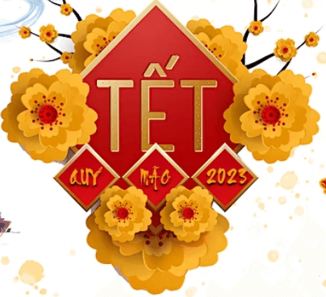

JANUARY
Tet Holiday Festival

Celebrating the Vietnamese New Year
January 14, 2023 – January 15, 2023
Vien Giac Buddhist Temple
2208 Mountain Road
Glen Allen
https://www.eventbrite.com/e/tet-holiday-festival-2023-lunar-new-year-tickets-437407065307
Richmond Jewish Food Festival

Richmond's 15th Annual Jewish Food Festival
January 15, 2023 – January 16, 2023
Weinstein Jewish Community Center
5403 Monument Avenue
Richmond
https://www.richmondjewishfoodfestival.com/
FEBRUARY
Richmond Chocolate, Wine & Whiskey Festival

Chocolate, wine and whiskey -- what more can you ask for???
February 11
Main Street Station
Richmond
https://chocolatewinewhiskey.com/
MARCH
Mobile Soul Sunday

One of my favorite days of the year, celebrating the diversity of black-owned food trucks and caterers
March 5
Location(s) yet to be announced
Richmond
https://rbre365.com/
Richmond Black Restaurant Experience

Promoting and celebrating the diveristy of black-owned restaurants throughout the Richmond region
March 6, 2023 - March 12, 2023
Participating restaurants not yet announced
The entire Richmond metropolitan area
https://rbre365.com/
Shamrock the Block

The annual Richmond St. Patrick's party
March 11
Arthur Ashe Boulevard between Leigh Street and Broad Street
Richmond
https://www.shamrocktheblock.com/
MAY
Que Pasa Festival

The festival which celebrates Hispanic and Latin American culture, arts and cuisine.
May 6
Canal Walk
Richmond
https://quepasafestival.com/
Lebanese Food Festival

The 38th Annual Lebanese Food Festival
May 19, 2023 - May 21, 2023
St. Anthony Maronite Church
4611 Sadler Road
Glen Allen
http://www.lebanesefoodfestival.com/
JUNE
Broad Appetit

After cancelling the last 3 years due to Covid, one of the most popular festivals in the city returns. Featuring restaurants, music and art, it also serves as a fundraiser for FeedMore.
June 4
Broad Street between Henry and Foushee
Richmond
http://www.broadappetit.com/
AUGUST
Carytown Watermelon Festival

An annual fun tradition, the 41st Carytown Watermelon Festival is a great way to promote all the merchants in Carytown while enjoying a slice of free watermelon
Exact date in August not announced
Cary Street in Carytown
Richmond
https://www.carytownwatermelonfestival.com/
SEPTEMBER
Armenian Food Festival

The 63rd annual Armenial Food Festival
Exact date in September has not been announced
St. James Armenian Church
834 Pepper Avenue
Richmond
https://armenianfoodfestival.com/
St. Benedict Oktoberfest

Richmond's Oktoberfest at St. Benedict's Catholic Church
Exact date in September has not been announced
St. Benedict Catholic Church
300 N. Sheppard Street
Richmond
https://www.stbenedictoktoberfest.com/
OCTOBER
2nd Street Festival

A celebration of the arts, culture and food scene of the Jackson Ward district of Richmond
Exact date in October has not been announced
Second Street in Jackson Ward
Richmond
https://venturerichmond.com/our-events/2nd-street-festival-2022/
The Festival of India

A festival celbrating Indian food, dance, music, clothing, jewelry and culture
October 14, 2023 - October 15,2023
Greater Richmond Convention Center
403 N. Third Street
Richmond
http://www.thefestivalofindia.org/?fbclid=IwAR0ZRghoSb9eaOYhEeuk0cGrdV6RWwKlbLKK-dwpDp27QQlyFxUppMiSf4w